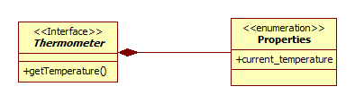
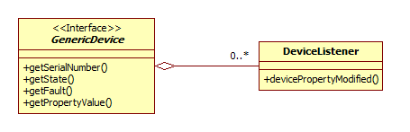
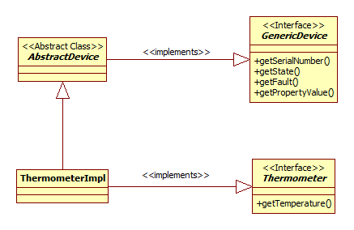
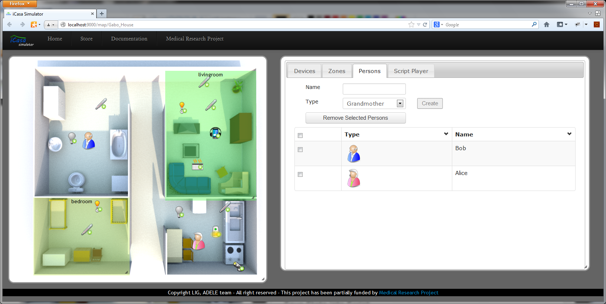

iCasa framework provides required support to build digital home applications. The main goal of digital home applications is to improve the living experience of people in its habitat, reducing the need for interaction with computers. Most digital home applications have to react to changes in the physical environment in which the system is deployed. They need also sometimes have information provided by the user as their preferences or other contextual information. In addition, third parties as telecom operators should share contextual information useful for digital home applications.
iCasa framework is built on OSGi platform, each device available to be used by applications is presented as a OSGi service into the service register. The platform is divided in two layers: the device layer and application layer. The device layer provides an abstraction of underlying physical devices allowing applications access them avoiding have to be aware of their technical details. On the other hand, application layer must only focus in to provide value added functionality for the digital home. The platform provides a set of technical services used for digital home applications, one of these services is the context service to context-related information representation. In addition, it includes a simulation module for testing digital home applications, the simulator can be accessed using an internet browser with HTML5 support.

iCasa framework provides a device model that must be used by device developers to expose device functionality, and by application developers to access that functionality. In iCasa device model, each device has to publish a description based in a Java interface and a set of properties. Device interface is used to expose device functionality, on the other hand properties set is used to known device state. In the next figure we illustrate the model using a Thermometer device with a method getTemperature() and one property "currenttemperature"_

Each device in the iCasa framework the device has to implement the fr.liglab.adele.icasa.device.GenericDevice interface. The GenericDevice interface defines methods to get the device unique identifier (getSerialNumber()), to access its state (getState()) and its fault situation (getFault()), and also a method to interrogate device to obtain its properties values (getPropertyValue(String propertyName)).
In addition, each device has the possibility of notify clients about changes in its state (when its properties' values have been changed) using the listener pattern. The device sends events to its listeners using a callback method (devicePropertyModified(GenericDevice device, String propertyName, Object oldValue)). Events sent must implement the Java interface fr.liglab.adele.icasa.device.DeviceEvent and listeners must implement fr.liglab.adele.icasa.device.DeviceListener interface.

iCasa framework provides an abstract implementation class for GenericDevice interface: fr.liglab.adele.icasa.device.util.AbstractDevice. This abstract class eases the development of new devices implementation by inheriting from it.
In the next figure we show an example of a typical device implementation using the iCasa device model.

iCasa applications are developed following the application model of the OSGi platform, in iCasa each device is exposed as an OSGi service in the its register. In OSGi each service can provide one or more interfaces, in iCasa each device exposes the GenericDevice and also the specific device interface. In addition, an iCasa application must be packaged as an OSGi bundle to be deployed on the platform. A tutorial showing how to build a new iCasa application is available here.
The simulator module allows developers to test their digital home applications. In its GUI there are two sections; the map section presents the home plan and the context tabs section shows information about the execution state of the iCasa platform.

A user guide of the iCasa Simulator GUI is available here